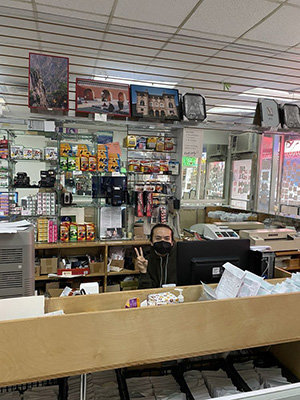

Eliz DIgital $

Who is Eliz Digital?
They are a small family business, In the Heart of China Town. Employees are friendly and professional, specialized in just film development.
Services
They sell Polaroid films and other film stocks like Fujifilm, Kodak, Portra, and Cinestill. Cash only, there's an atm a few storefronts down.

.jpeg)
Something Unique
Digital offers reasonable prices and quick turnaround times. It's a very easy process there, they develop your film and email a really convenient WeTransfer link. You also have the option to get prints done there too! They also sell Polaroid films and other film stocks like Fujifilm, Kodak, Portra, and Cinestill. Only downside is that its, Cash only!
Val's Review
I whole heartedly believe everyone in this business deserves a raise something from the city; because not only is the prices for their photos service is fair and of high quality. It's just simply professional! I walked in I was immediately greeted by an employee friendly and professionally! I walked out satisfied with my purchase and now a regular for this business. Thank you to everyone.